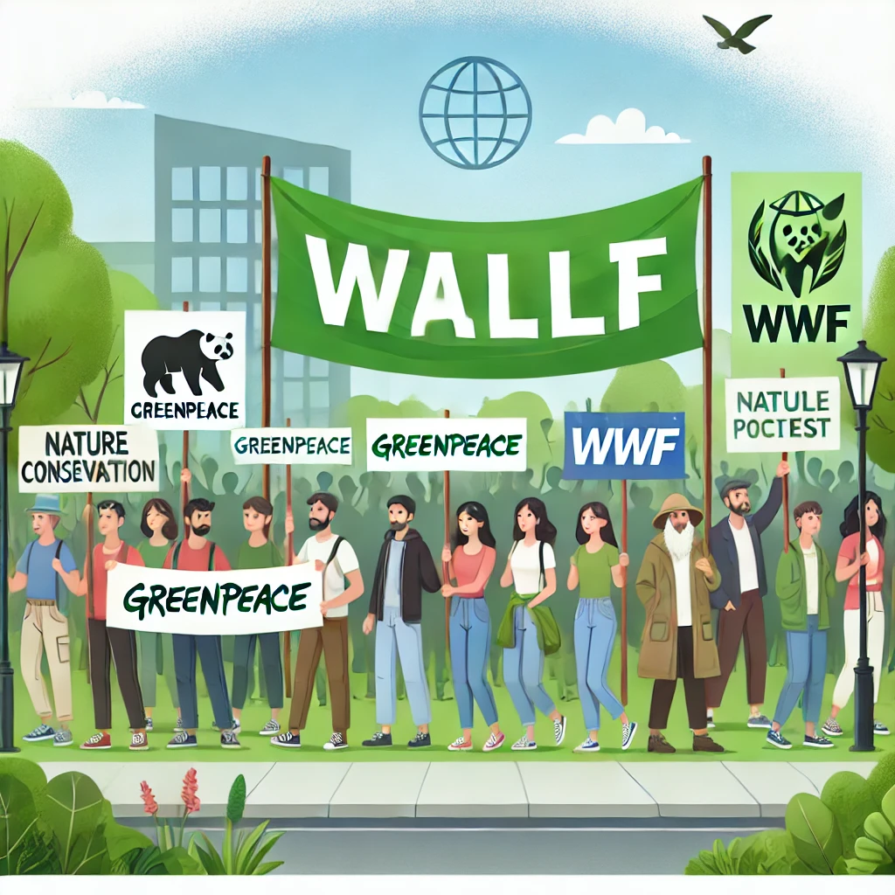
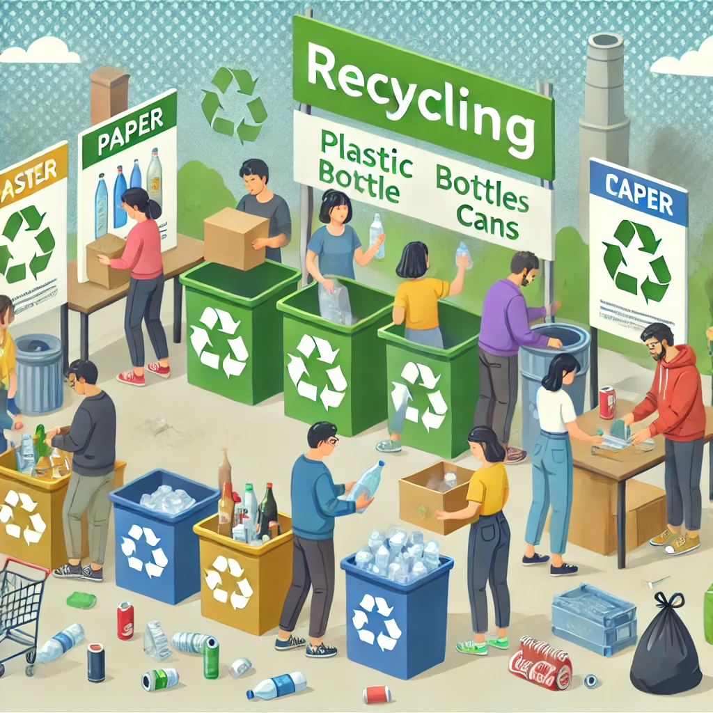
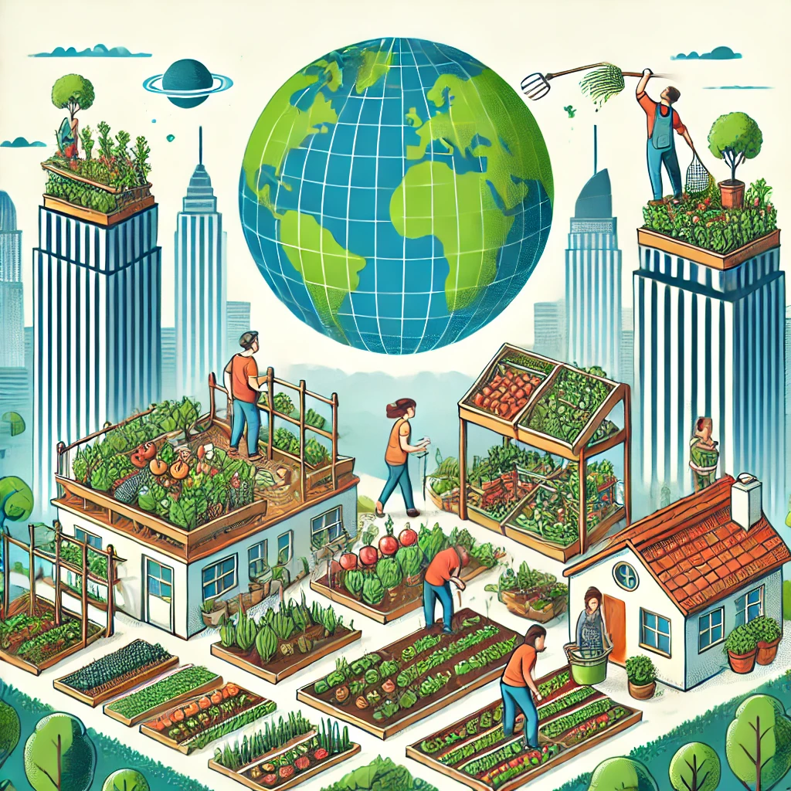
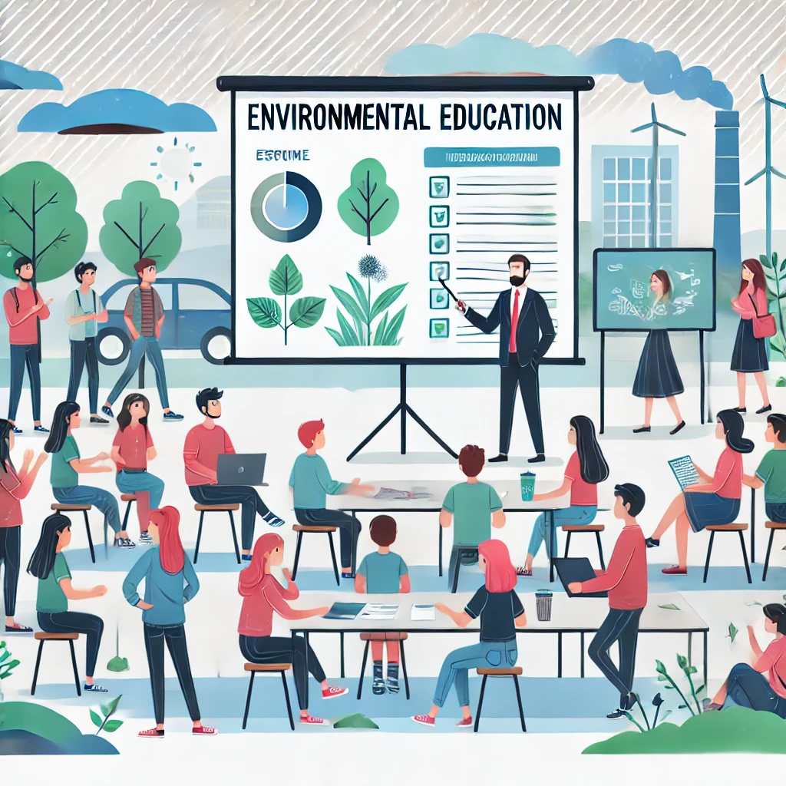
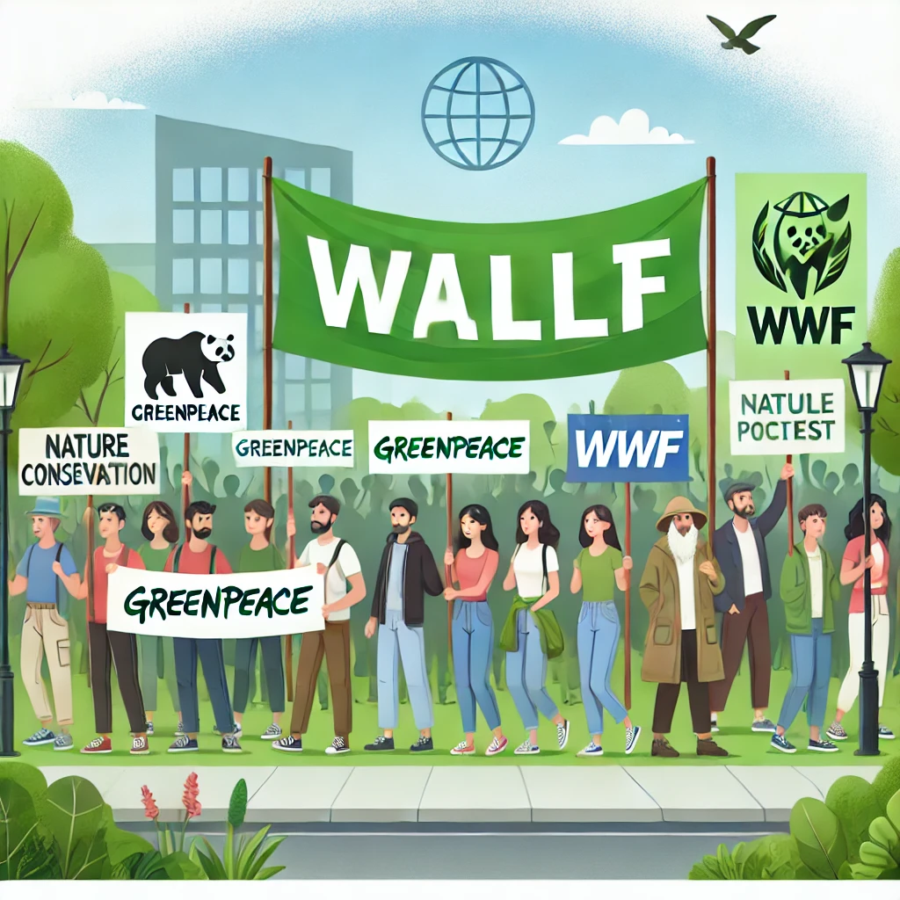
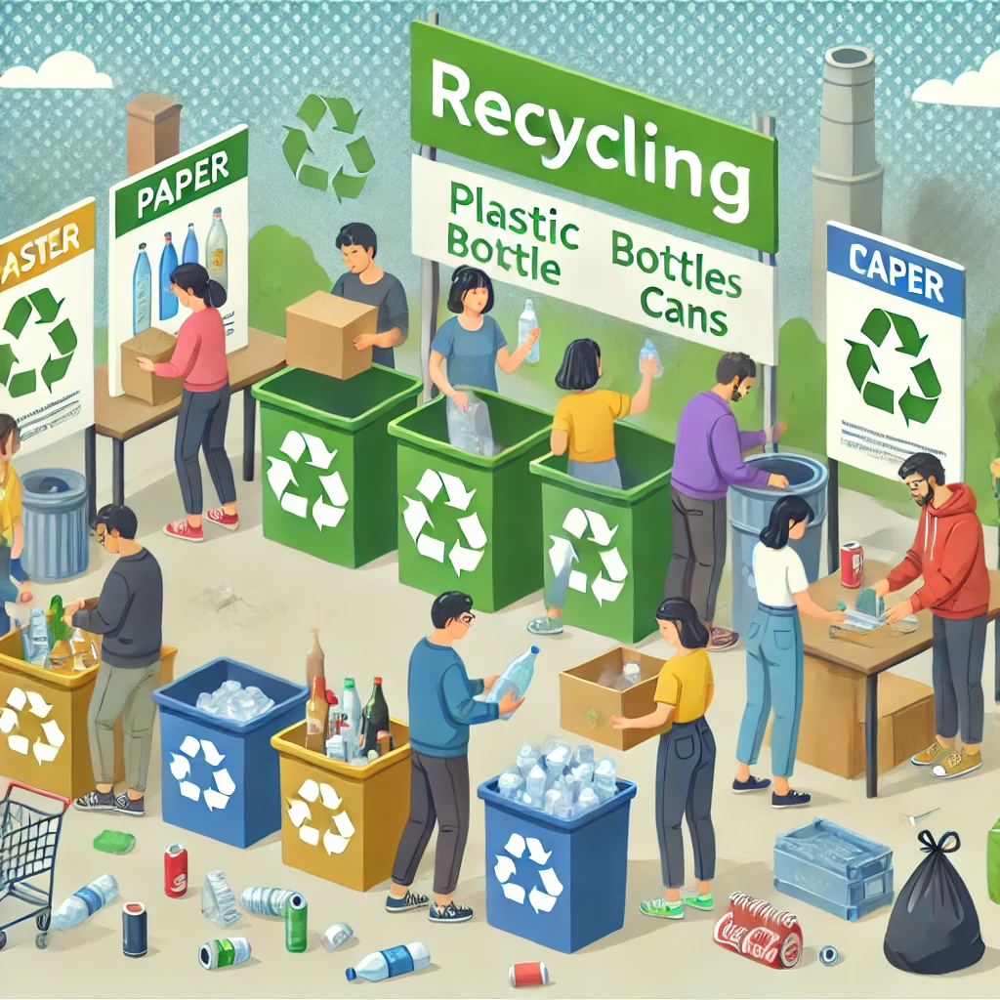
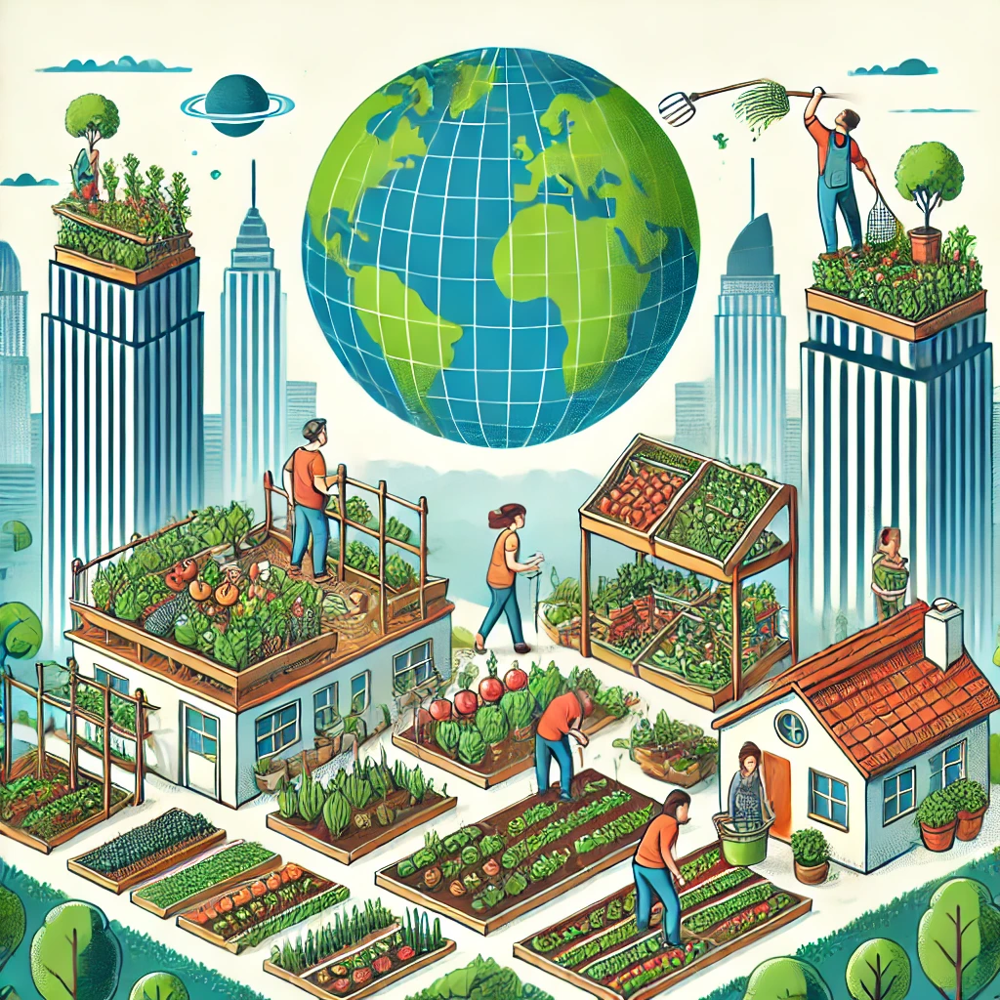
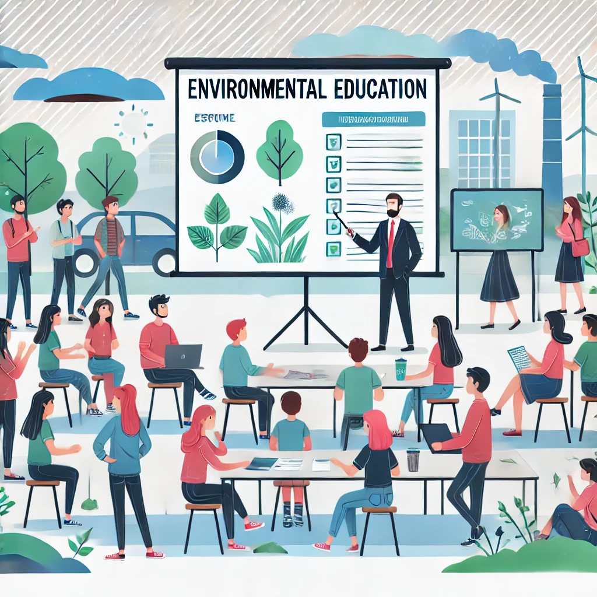

Peran Pemerintah dan Masyarakat
Peran Komunitas dan Organisasi Lingkungan
Selain pemerintah, komunitas dan organisasi lingkungan juga memiliki
peran penting dalam menjaga keseimbangan ekosistem. Beberapa upaya yang dilakukan oleh komunitas dan
organisasi meliputi:
Gerakan Bersih Lingkungan
- Komunitas lokal sering mengadakan kegiatan gotong royong membersihkan sampah di lingkungan
sekitar, seperti pantai, sungai, dan taman kota.
Organisasi Lingkungan
- Beberapa organisasi seperti Greenpeace, WALHI, dan WWF aktif dalam advokasi perlindungan
lingkungan dan kampanye pelestarian alam.
Bank Sampah dan Daur Ulang
- Komunitas membangun bank sampah untuk mengurangi limbah plastik serta mendaur ulang barang yang
masih bisa digunakan kembali.
Program Urban Farming
- Masyarakat mulai menerapkan konsep pertanian kota untuk menciptakan lingkungan hijau dan
mengurangi dampak polusi.
Edukasi dan Sosialisasi
- Komunitas mengadakan seminar, lokakarya, dan kampanye sosial untuk meningkatkan kesadaran
lingkungan di kalangan masyarakat.

 






